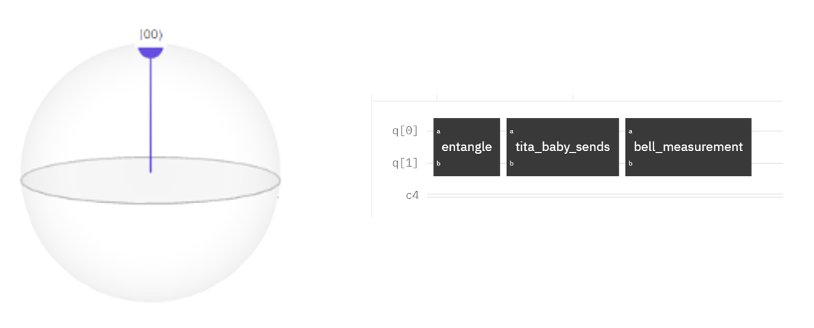
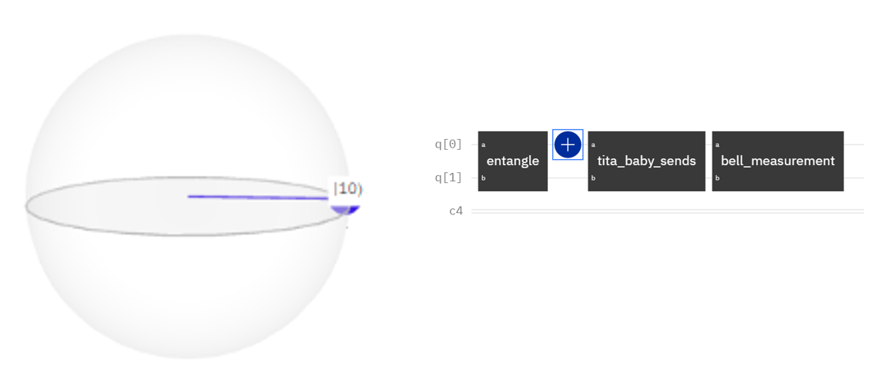
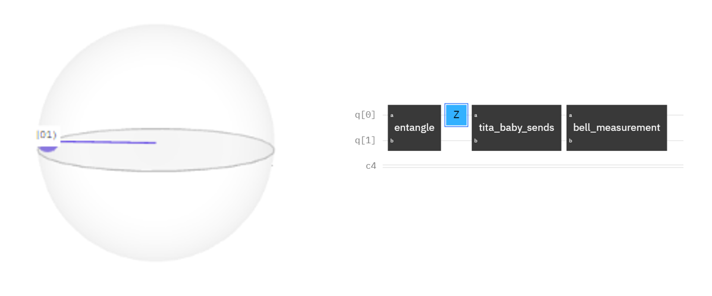
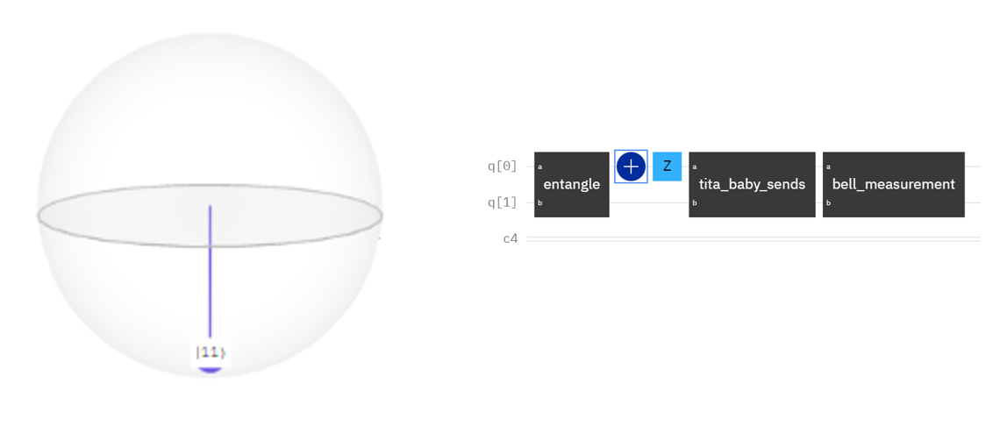

6. Quantum Algorithms and Their Advantages Over Classical Counterparts#
by Jul Jon R. General
6.1. Superdense Coding#
Tita Baby wants to send classical information to Tito Arnel. For example, this info could be her preferred restaurant from four choices: Jollibee, McDonald’s, Mang Inasal, and Popeye’s.
These four choices can be encoded using two bits (Remember our classical computing module), such that:
00 = Jollibee
01 = McDonald’s
10 = Mang Inasal
11 = Popeye’s
To tell Tito Arnel where she wants to eat, without loss of information, she needs to send two classical bits. How can we improve this?
Quantumly, Tita Baby can send just one qubit, but it needs to be entangled with a second qubit that Tito Arnel already has. Say Tita Baby and Tito Arnel share a pair of entangled qubits in the |Φ+⟩ state: (1/√2)(|00⟩ + |11⟩)
If Tita Baby wants to tell Tito Arnel that she chooses Jollibee then she does nothing to her qubit: 
If Tita Baby wants to tell Tito Arnel that she chooses McDonald’s then she applies the X gate to her qubit: 
If Tita Baby wants to tell Tito Arnel that she chooses Mang Inasal then she applies the Z gate to her qubit: 
If Tita Baby wants to tell Tito Arnel that she chooses Popeye’s then she applies the X gate and then the Z gate to her qubit: 
As a communication protocol, this shows an improvement: Only 1 qubit is needed to be sent, compared to 2 classical bits. But computationally, this still requires 2 qubits.
6.2. Parity Problem#
In the first scenario, we are given two unknown bits, \(b_0\) and \(b_1\), and our task is to determine their parity. In other words, we need to find \(b_0 \oplus b_1\), which indicates whether the number of 1’s among these two bits is odd or even. To achieve this, we have access to an oracle function \(f(x)\) that accepts an input \(x \in \{0, 1\}\) and returns the corresponding bit \(b_x\). Specifically,
We will demonstrate that while classically finding the parity of \(b_0\) and \(b_1\) requires querying the oracle twice, quantum computing can achieve this with a single query.
6.3. Classical Approach#
In classical computing, to determine the parity of \(b_0\) and \(b_1\), it is necessary to know both bits. Therefore, we must query the oracle twice: first to obtain \(b_0\) and then to get \(b_1\):
After acquiring both bits, we compute their parity using the XOR operation \(b_0 \oplus b_1\). Consequently, the classical query complexity for this task is 2.
6.4. Quantum Solution using Deutsch Algorithm#
The Deutsch algorithm allows us to determine the parity of \(b_0\) and \(b_1\) with a single query to the oracle. The steps are as follows:
Initialize the qubits: We start with two qubits in the state \(\lvert 0 \rangle \lvert 1 \rangle\).
Apply Hadamard gates: Apply the Hadamard gate to both qubits to create a superposition:
Oracle query: Apply the oracle function \(U_f\) which maps \(\lvert x, y \rangle\) to \(\lvert x, y \oplus f(x) \rangle\). The state of the system becomes:
Apply Hadamard gate to the first qubit again: This transforms the state as follows:
Measure the first qubit: If the result is \(\lvert 0 \rangle\), then \(b_0 \oplus b_1 = 0\) (the number of 1’s is even). If the result is \(\lvert 1 \rangle\), then \(b_0 \oplus b_1 = 1\) (the number of 1’s is odd).
Thus, using the Deutsch algorithm, we can determine the parity of \(b_0\) and \(b_1\) with only a single query to the oracle.
6.5. Secret XOR Mask#
6.5.1. The Problem#
In this problem, we consider an oracle that takes an \(n\)-bit input string \(x = x_{n-1} \ldots x_1 x_0\) and returns an \(n\)-bit output string \(f(x) = f_{n-1} \ldots f_1 f_0\). The function \(f\) is defined as \(f : \{0,1\}^n \rightarrow \{0,1\}^n\). We are given the condition that:
if and only if the inputs \(x\) and \(y\) are related by the equation
for a certain non-zero \(n\)-bit string \(s = s_{n-1} \ldots s_1 s_0\), where \(\oplus\) represents the bitwise XOR operation. This means \(f(x) = f(y)\) if and only if
Our task is to discover the secret \(n\)-bit string \(s = s_{n-1} \ldots s_1 s_0\), known as the XOR mask.
For instance, let’s consider \(n = 3\) and \(s = 110\). The table below shows the values of \(x \oplus s\) for each \(x\):
These pairs are significant because if \(y = x \oplus s\), it follows that \(x = y \oplus s\). Here’s why: starting with
XOR both sides with \(s\):
Since \(s \oplus s = 0\), this simplifies to:
Therefore,
From the oracle’s promise, for each pair \(x\) and \(y\), the outputs \(f(x)\) and \(f(y)\) must be identical. Consider the following two possible truth tables for \(f(x)\), which satisfy the condition \(f(x) = f(y)\) if and only if \(y = x \oplus s\):
In both tables, you can see that \(f(000) = f(110)\), \(f(001) = f(111)\), \(f(010) = f(100)\), and \(f(011) = f(101)\). Additionally, there are 1680 possible truth tables for \(f(x)\) because we can independently assign outputs to each pair of inputs. Since there are \(2^3 = 8\) different possible outputs, the total number of unique assignments is:
6.6. Classical Solution#
In a classical setting, we can uncover the secret XOR mask ( s ) by finding a collision, that is, identifying a pair of inputs ( x ) and ( y ) such that ( f(x) = f(y) ). According to the given condition, this means ( x = y \oplus s ) and ( y = x \oplus s ). To find ( s ), we simply compute the XOR of ( x ) and ( y ):
One straightforward method involves sequentially trying different inputs until a collision is found. In the worst-case scenario, this could involve checking approximately half of the possible inputs before finding a collision. However, once this point is reached, the next input is guaranteed to produce a collision, making the query complexity for this approach ( O(2^{n-1} + 1) ).
A more efficient method involves querying ( f ) with random inputs to prevent ( f ) from being structured to delay collisions. After making ( k ) queries to ( f ), the likelihood of having a collision among the ( k ) outputs can be approximated by the combination ( kC2 = \frac{k(k - 1)}{2} \approx O(k^2) ). Since this probability grows quadratically with the number of queries, we can expect to find a collision after approximately ( \sqrt{2^n} = 2^{n/2} ) queries. Although this is a significant improvement, it still represents exponential complexity in ( n ).
6.6.1. Birthday Paradox Example#
The task of finding a collision is related to the well-known birthday problem, which calculates the probability that, in a group of ( n ) people, at least two share the same birthday. Ignoring leap years and assuming random distribution of birthdays, we can calculate the probability that no two people share the same birthday.
Starting with the first person, the probability is 1. For the second person, it’s ( \frac{364}{365} ), for the third ( \frac{363}{365} ), and so on. The overall probability that no one shares a birthday is:
Thus, the probability that at least two people share a birthday is:
This probability can be computed using software. For ( n = 23 ):
Using Mathematica:
n = 23; 1 - Product[i/365., {i, 365 - (n - 1), 365}]
The output is approximately 0.507297.
6.6.2. Simon’s Algorithm#
Simon’s algorithm is a quantum computing algorithm that offers a significant advantage over classical methods for solving certain problems. Here’s how it works:
Initialization:
Simon’s algorithm begins with two sets of ( n )-qubit registers initialized to ( |0\rangle^{\otimes n} |0\rangle^{\otimes n} ).
Applying Hadamard Gates:
Hadamard gates ( H ) are applied to each qubit in the first register (input qubits), creating a superposition of all ( 2^n ) possible input states: $\( \frac{1}{\sqrt{2^n}} \sum_{x \in \{0,1\}^n} |x\rangle |0\rangle^{\otimes n} \)$
Querying the Oracle:
Using a quantum oracle ( U_f ), where ( U_f |x\rangle |y\rangle = |x\rangle |y \oplus f(x)\rangle ). Here, ( f(x) ) is an ( n )-bit function with a hidden periodicity ( s ).
Post-query, the state transforms to: $\( \frac{1}{\sqrt{2^n}} \sum_{x \in \{0,1\}^n} |x\rangle |f(x)\rangle \)$
Applying Hadamard Gates Again:
Another round of Hadamard gates on the input qubits results in: $\( \frac{1}{2^n} \sum_{x,z \in \{0,1\}^n} (-1)^{x \cdot z} |z\rangle |f(x)\rangle \)$ Here, ( x \cdot z ) denotes the bitwise dot product modulo 2.
Measurement:
All qubits are measured. The outcomes for the answer qubits (second register) provide vectors ( f(x) ) where ( f(x) = f(x’) ), and ( x’ ) and ( x’’ ) are solutions to ( x’ \cdot s = x’’ \cdot s \mod 2 ).
Post-processing:
Using the measurement results, ( s ) is determined by solving equations derived from ( x’ \cdot s = x’’ \cdot s \mod 2 ).
6.6.3. Conclusion#
Simon’s algorithm showcases quantum computing’s ability to achieve exponential speedup. By leveraging quantum superposition and interference, it efficiently solves problems that would require exponentially more queries on a classical computer. This algorithm highlights the power of quantum computation in addressing complex cryptographic and computational challenges.